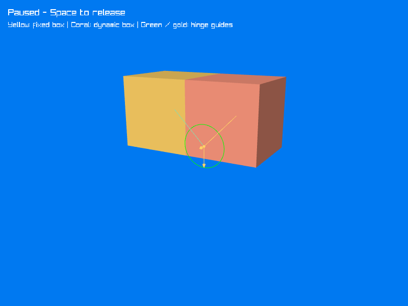

Hello World
Now put the scene, hinge, and debug drawer together. The yellow box stays fixed while gravity swings the coral box around their shared lower edge. The boxes are filled, with green and gold hinge guides drawn on top so the anchors, axis, and current angle stay visible.

The recording holds the initial pose briefly, then runs the simulation. It loops back to the starting arrangement at the end.
Complete code
Using the project from Project Setup, replace Program.cs with the following. The RaylibDebugDrawer class belongs after the top-level statements in the same file.
using System;
using System.Numerics;
using Jitter2;
using Jitter2.Collision.Shapes;
using Jitter2.Dynamics;
using Jitter2.Dynamics.Constraints;
using Jitter2.LinearMath;
using Raylib_cs;
using static Raylib_cs.Raylib;
using World world = new();
world.Gravity = new JVector(0, -9.81f, 0);
world.SubstepCount = 4;
RigidBody left = world.CreateRigidBody();
left.AddShape(new BoxShape(2));
left.Position = new JVector(-1, 1, 0);
left.MotionType = MotionType.Static;
RigidBody right = world.CreateRigidBody();
right.AddShape(new BoxShape(2));
right.Position = new JVector(1, 1, 0);
JVector hingeCenter = new(0, 0, 0);
JVector hingeAxis = JVector.UnitZ;
var hinge = new HingeJoint(world, left, right, hingeCenter, hingeAxis);
var leftStyle = new DebugDrawSettings { CurrentColor = 0xFFD166FF };
var rightStyle = new DebugDrawSettings { CurrentColor = 0xFF997FFF };
var hingeStyle = new DebugDrawSettings
{
GuideSize = 0.65f,
PointRadius = 0.04f,
ArrowHeadSize = 0.1f,
SolidArrows = false,
ReferenceColor = 0x8CDBAAFF,
CurrentColor = 0xFFD166FF
};
SetConfigFlags(ConfigFlags.Msaa4xHint);
InitWindow(1000, 750, "Jitter2 - Two boxes and a hinge");
SetTargetFPS(100);
Camera3D camera = new()
{
Position = new Vector3(5, 3, 9),
Target = new Vector3(0, -0.2f, 0),
Up = Vector3.UnitY,
FovY = 45,
Projection = CameraProjection.Perspective
};
var bodyDrawer = new RaylibDebugDrawer { ShadeTriangles = true };
var jointDrawer = new RaylibDebugDrawer();
bool paused = true;
while (!WindowShouldClose())
{
if (IsKeyPressed(KeyboardKey.Space)) paused = !paused;
if (!paused)
{
world.Step(1.0f / 100.0f, true);
}
BeginDrawing();
ClearBackground(Color.Blue);
BeginMode3D(camera);
left.DebugDraw(bodyDrawer, leftStyle);
right.DebugDraw(bodyDrawer, rightStyle);
// Finish the solid geometry before changing the depth-test state.
Rlgl.DrawRenderBatchActive();
Rlgl.DisableDepthTest();
hinge.DebugDraw(jointDrawer, hingeStyle);
Rlgl.DrawRenderBatchActive();
Rlgl.EnableDepthTest();
EndMode3D();
DrawText(paused ? "Paused - Space to release" : "Running - Space to pause",
20, 20, 22, Color.White);
DrawText("Yellow: fixed box | Coral: dynamic box | Green / gold: hinge guides",
20, 52, 18, Color.White);
EndDrawing();
}
CloseWindow();
sealed class RaylibDebugDrawer : IDebugDrawer
{
public bool ShadeTriangles { get; init; }
private static readonly Vector3 LightDirection = Vector3.Normalize(new(-1, 2, 3));
private static Vector3 ToVector(in JVector p) => new(p.X, p.Y, p.Z);
private static Color ToColor(uint rgba) => new(
(byte)((rgba >> 24) & 0xFF),
(byte)((rgba >> 16) & 0xFF),
(byte)((rgba >> 8) & 0xFF),
(byte)(rgba & 0xFF));
public void DrawSegment(in JVector pA, in JVector pB, uint color)
{
DrawLine3D(ToVector(pA), ToVector(pB), ToColor(color));
}
public void DrawTriangle(in JVector pA, in JVector pB, in JVector pC, uint color)
{
Vector3 a = ToVector(pA), b = ToVector(pB), c = ToVector(pC);
Color tint = ToColor(color);
// Simple face shading makes the solid boxes easier to read.
Vector3 normal = Vector3.Cross(b - a, c - a);
if (ShadeTriangles && normal.LengthSquared() > 0)
{
float light = 0.55f + 0.45f * Math.Max(0,
Vector3.Dot(Vector3.Normalize(normal), LightDirection));
tint = new Color((byte)(tint.R * light), (byte)(tint.G * light),
(byte)(tint.B * light), tint.A);
}
DrawTriangle3D(a, b, c, tint);
}
}
Run the example
dotnet run
The program starts paused so you can inspect the boxes and the hinge. Press Space to release the right box, and press it again to pause. Restart the program to return to the initial pose. Escape closes the window.
Like the earlier tutorials, this example uses SetTargetFPS(100) and calls world.Step(1.0f / 100.0f, true) once per unpaused frame. Each step advances the simulation by 0.01 seconds; true enables Jitter's multithreaded stepping. This simple loop runs at real-time speed when it reaches 100 frames per second and slows down if rendering falls below that target.
using World world releases Jitter's resources when the program exits. CloseWindow releases Raylib's window; this drawer owns no meshes or textures to unload.
Try a limit
Replace the HingeJoint construction with the limited version from Hinge Joint. The box will stop near a quarter turn, and the debug guides will show the allowed range. The drawer itself needs no changes.